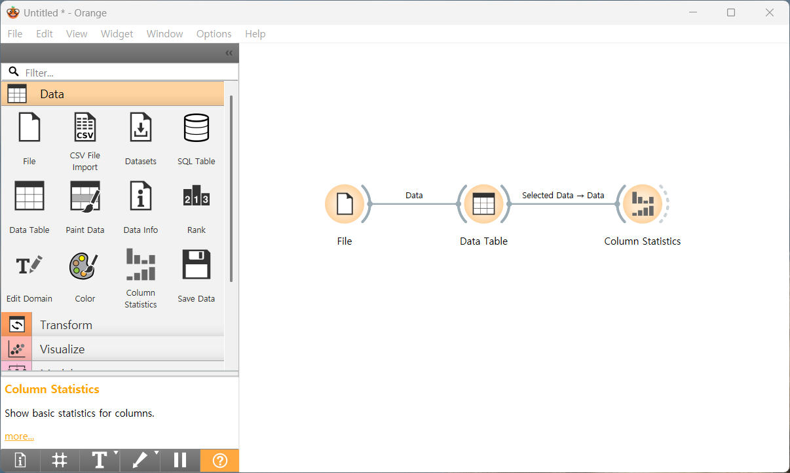
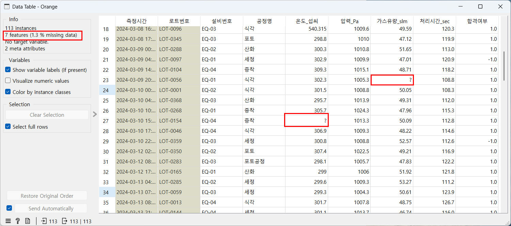
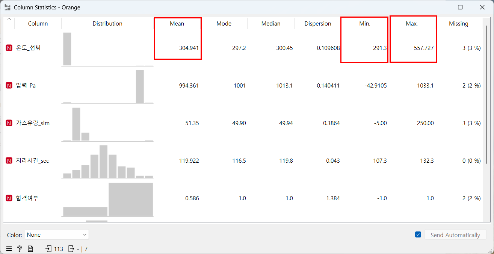

describe()로 숫자로 전체 모습을 본다.
5차시
데이터 훑어보기와 정리(EDA)
오늘의 질문: "코드를 한 줄도 쓰기 전에, 이 데이터에 어떤 문제가 있어 보이는지 먼저 확인할 수 있을까?"
학습 목표
- 공장 데이터에 빈칸·중복·튀는 값이 왜 생기는지, 그대로 두면 평균이 어떻게 틀어지는지 설명할 수 있다.
- Orange3로 CSV를 열어 빈칸과 튀는 값이 있는 열을 먼저 눈으로 찾을 수 있다.
- Pandas로 결측값·중복값·이상값을 찾고, 지울지 채울지 골라 정리할 수 있다.
- 정리 전후의 행 개수와 평균을 비교해 한 문장으로 해석할 수 있다.
선수 지식: 4차시 — read_csv, 열 선택, 조건 검색 / 3차시 — for 반복문 / 1차시 — f-string
왜 이걸 배워야 할까?
- 공장 데이터는 사람이 한 줄씩 적는 것이 아니라 센서·설비·네트워크가 자동으로 쌓는다. 그 과정에서 빈칸, 같은 기록의 중복, 말이 안 되게 튀는 값이 끼어든다.
- 지저분한 채로 계산하면 결과가 틀린다. 코드가 오류 없이 돌아가도 숫자가 틀린다는 점이 더 무섭다.
- 오늘 데이터를 정리하기 전과 후를 비교하면 이렇다(실습에서 직접 계산하는 실제 결과다).
| 항목 | 정리 전 | 정리 후 | 무엇이 달라졌나 |
|---|---|---|---|
| 행 개수 | 113행 | 102행 | 중복 3행, 결과가 빈 2행, 튀는 값이 있는 6행을 덜어냈다 |
| 평균 온도 | 304.9 | 300.6 | 540도·557도 기록 2건이 평균을 4도 넘게 끌어올리고 있었다 |
| 평균 압력 | 994.4 | 1013.6 | 음수 압력 2건이 평균을 끌어내리고 있었다 |
| 최고 온도 | 557.7 | 310.9 | "가장 뜨거웠던 기록"이 완전히 다른 값이 됐다 |
숫자로 보는 위험
이 과정에서 정한 학습용 압력 정상 범위는 995~1025다. 정리 전 평균 압력 994.4만 보면
"이 공장은 압력이 정상보다 낮다"는 결론을 낼 수 있다. 실제로는 113건 중 2건의 음수 기록이 평균을 끌어내린 것이고,
정리하면 1013.6으로 범위 한가운데다. 결론이 데이터의 문제 때문에 뒤집힌 것이다.
비유 — 가계부
같은 영수증을 두 번 적거나, 5,000원을 50,000원으로 잘못 적은 가계부로는 "이번 달에 얼마 썼는지" 믿을 수 없다.
그래서 분석의 첫 단계는 데이터를 훑어보고 정리하는 것이다. 이 단계를 EDA(탐색적 데이터 분석)라고 부른다.
지난 시간 복습
4차시 연결
- 4차시에
pd.read_csv()로 CSV를 표(DataFrame)로 읽고,df[df["설비번호"] == "EQ-02"]처럼 조건에 맞는 행만 골라냈다.df[["로트번호", "온도_섭씨"]]처럼 대괄호 두 겹으로 여러 열을 골랐다. - 오늘은 같은 조건 검색으로 "말이 안 되는 값"을 찾는다. 새로 배우는 것은 빈칸·중복을 세고 정리하는 함수 몇 개다.
1차시 연결
1차시 용어 카드에서 "센서 값이 항상 정확한 건 아니다. 고장이나 잡음으로 이상한 값이 섞일 수 있다(5차시)"라고 예고했다.
오늘이 그 시간이다. 1차시에 배운 "여러 열을 함께 본다"는 생각법도 오늘 이상값을 다룰 때 다시 쓴다.
데이터 정리 개념 이해하기
오늘 데이터의 열 다시 보기
파일은 week05_dirty_process_data.csv(113행 9열, 교육용 가상 데이터)다. 한 행은 공정 작업 1건의 기록이다.
| 열 | 공장에서의 뜻 |
|---|---|
측정시간 | 작업을 기록한 날짜와 시각 |
로트번호 | 웨이퍼 묶음(택배 상자 하나)의 번호 |
설비번호 | 작업한 기계 번호(EQ-01~EQ-04) |
공정명 | 한 작업의 종류(포토·식각·증착·세정·산화) |
온도_섭씨, 압력_Pa | 설비 안의 온도·압력을 센서가 잰 값 |
가스유량_slm | 설비에 흘려 넣은 가스의 양(slm은 1분 동안 흐른 가스의 양을 리터(표준 상태로 환산한)로 나타낸 단위) |
처리시간_sec | 작업에 걸린 시간(초) |
합격여부 | 검사 결과. 1 = 합격, -1 = 불합격 |
가상 값이라는 점 기억하기
온도·압력·가스유량 값은 교육용으로 만든 숫자라 실제 공정 조건과 다르다. 이 과정에서는 값의 크기를 실제 공정으로
해석하지 않고, 기록끼리 비교하는 연습용 숫자로만 쓴다. 오늘 쓰는 정상 범위(온도 295~305, 압력 995~1025, 가스유량 47~53)도
학습용으로 정한 기준이다.
공장 데이터는 왜 지저분해질까
문제는 크게 네 종류다. 이름보다 왜 생기는지를 먼저 보자.
| 문제 | 한 줄 뜻 | 공장에서 생기는 이유(예) | 생활 속 비유 | 오늘 데이터 |
|---|---|---|---|---|
| 결측값 | 값이 있어야 할 칸이 비어 있다 | 센서가 잠깐 꺼짐, 통신이 끊겨 값이 안 들어옴, 검사 결과 입력을 빠뜨림 | 출석부에 체크를 깜빡한 칸 | 10칸 |
| 중복값 | 같은 기록이 두 번 저장됐다 | 통신이 불안정해 같은 기록을 다시 보냄, 파일을 합치다 겹침 | 같은 영수증을 가계부에 두 번 적기 | 3행 |
| 이상값 | 값은 있는데 말이 안 되게 튄다 | 센서 고장·잡음, 단위 실수, 숫자를 잘못 입력, 또는 진짜 설비 문제 | 고장 난 체중계에 찍힌 300kg | 6건 |
| 입력 오류 | 같은 뜻인데 글자·형식이 다르다 | 사람이 직접 입력하다 오타, 설비마다 날짜 형식이 다름 | 주소를 "서울시"와 "서울특별시"로 섞어 쓰기 | 공정명 3건, 측정시간 2건 |
오늘 데이터의 문제는 일부러 넣은 것
오늘 데이터의 빈칸·중복·튀는 값은 연습을 위해 일부러 넣었다. 그래서 하나하나가 정확히 왜 생겼는지는 알 수 없다.
위 표의 이유는 실제 공장에서 흔히 생기는 경우를 예로 든 것이다.
빈칸은 0이 아니다
- Pandas는 빈칸을
NaN(Not a Number, "값 없음")으로 표시한다. - 시험을 안 본 학생(빈칸)과 0점을 받은 학생은 다르다. 빈칸을 0으로 바꾸면 평균이 엉뚱하게 내려간다.
오늘의 순서
1
훑어보기 — Orange3로 눈으로,
2
결측값 — 빈칸을 세고, 지울지 채울지 정한다.
3
중복값 — 두 번 저장된 기록을 세고 여분을 지운다.
4
이상값 — 조건 검색으로 찾고, 다른 열과 함께 들여다본 뒤 처리한다.
5
비교 — 정리 전후 행 개수와 평균을 나란히 놓고 해석한다.
① Orange3로 먼저 훑어보기
코드를 쓰기 전에 마우스만으로 같은 CSV를 열어본다. 위젯 세 개를 이어 붙인다.
1
File — 왼쪽 위젯 목록의 Data 묶음에서 File을 오른쪽 빈 화면(캔버스)으로 끌어다 놓는다.
더블클릭 → 폴더 아이콘 →
week05_dirty_process_data.csv 선택 → 창을 닫는다.2
Data Table — 같은 묶음에서 끌어다 놓는다. File 오른쪽 가장자리를 누른 채 Data Table까지
끌어 선으로 잇는다. 더블클릭하면 표가 열린다. 빈칸은
?로 보인다.3
Column Statistics — 같은 묶음에서 끌어다 놓고 Data Table과 선으로 잇는다(Orange3 버전에 따라
이름이 Feature Statistics로 보일 수 있다). 더블클릭해 Min., Max., Missing 칸을 본다.
- Orange3를 처음 연다면 부록: Orange3 시작하기를 참고한다.


?로 보인다. 왼쪽 위 Info에 "1.3 % missing data"(빈칸 비율)가 나온다. Orange3는 일부 열만 세어 비율을 낼 수 있어서, 113행×9열 전체로 직접 계산한 비율(약 0.98%)과 다르게 나올 수 있다.
| 볼 곳 | 보이는 값 | 뜻 |
|---|---|---|
| Missing 칸 | 온도 3, 압력 2, 가스유량 3, 합격여부 2 | 빈칸(결측값)이 있는 열 |
| 온도_섭씨 Max. | 557.727 | 정상 범위(295~305)보다 훨씬 크다 → 이상값 후보 |
| 압력_Pa Min. | -42.9105 | 압력이 음수다 → 이상값 후보 |
| 가스유량_slm Min. / Max. | -5.00 / 250.00 | 음수, 그리고 평소(약 50)의 5배 → 이상값 후보 |
| 온도_섭씨 Mean / Median | 304.941 / 300.45 | 평균이 중앙값보다 크다 → 큰 값이 평균을 끌어올리는 중 |
주의 — 숫자가 113이 아닐 때
Data Table에서 행을 클릭해 선택하면 Column Statistics에는 선택한 행만 넘어간다. Column Statistics 창 아래쪽 입력 숫자가
113이 아니면 Data Table 왼쪽의 Clear Selection을 누른다.
Orange3가 보여주지 못하는 것
빈칸과 튀는 값은 한눈에 보였다. 하지만 똑같은 행이 두 번 있는지(중복)는 113행을 눈으로 하나씩 비교해야 해서
찾기 어렵다. 그리고 문제를 "찾는 것"과 "고치는 것"은 다른 일이다. 이제 같은 내용을 파이썬으로 확인하고 정리한다.
② 파이썬으로 확인하기 — 숫자 요약과 결측값
데이터 읽고 숫자 요약 보기 — describe()
- 4차시처럼 CSV를 읽는다. 이 과정의 CSV는
encoding="utf-8-sig"를 붙여 읽는다. describe()는 숫자 열마다 개수·평균·최솟값·최댓값 등을 한 번에 요약한다. Orange3의 Column Statistics를 코드로 본 것이다.
Python — 데이터 읽기
import pandas as pd
df = pd.read_csv("../../data/weekly/week05/week05_dirty_process_data.csv", encoding="utf-8-sig")
print(df.shape)
실행 결과
(113, 9)
Python — 숫자 요약
print(df.describe())
실행 결과
온도_섭씨 압력_Pa 가스유량_slm 처리시간_sec 합격여부 count 110.000000 111.000000 110.000000 113.000000 111.000000 mean 304.941298 994.361336 51.350000 119.922124 0.585586 std 33.576979 140.252613 19.933578 5.191128 0.814287 min 291.300000 -42.910520 -5.000000 107.300000 -1.000000 25% 298.100000 1007.850000 48.755000 116.500000 1.000000 50% 300.450000 1013.100000 49.940000 119.800000 1.000000 75% 302.500000 1017.500000 51.377500 123.400000 1.000000 max 557.727366 1033.100000 250.000000 132.300000 1.000000
결과 읽는 법 — 세 줄만 보면 된다
count(값이 있는 개수) — 113보다 작은 열(온도 110, 압력 111, 가스유량 110, 합격여부 111)에 빈칸이 있다.min/max— 온도 max 557.73, 압력 min -42.91, 가스유량 min -5.0·max 250.0. Orange3에서 본 그 값들이다.mean(평균)과50%(중앙값) — 온도 평균 304.94가 중앙값 300.45보다 크다. 큰 값이 평균을 끌어올리고 있다는 신호다.std,25%,75%는 오늘은 넘어간다. 소수점은 둘째 자리 정도까지만 읽으면 된다.
주의 — describe()는 숫자 열만 보여준다
측정시간·로트번호·설비번호·공정명처럼 글자로 된 열은 결과에 나오지 않는다.
합격여부는 1/-1을 숫자로 적은 "결과 표시"라서 평균(0.59) 같은 값은 뜻이 없다. 개수(count)만 본다.
정리 전 값 기억해 두기
정리가 끝난 뒤 비교하려면 지금 값을 변수에 저장해 둬야 한다(1차시 변수·f-string). .mean()은 평균을 구한다.
빈칸은 빼고 계산한다.
Python — 정리 전 값 저장
before_rows = len(df)
before_temp = df["온도_섭씨"].mean()
before_pressure = df["압력_Pa"].mean()
print(f"정리 전: {before_rows}행, 평균 온도 {before_temp:.1f}, 평균 압력 {before_pressure:.1f}")
실행 결과
정리 전: 113행, 평균 온도 304.9, 평균 압력 994.4
주의 — 이 셀은 한 번만
정리가 끝난 뒤 이 셀을 다시 실행하면 정리된 값이 "정리 전"으로 저장된다. 그러면 마지막 비교에서 전후가 똑같이 나온다.
결측값 정확히 세기 — isna()
isna()는 칸마다 "비어 있나?"를 물어 True/False로 바꾼다.- 뒤에
.sum()을 붙이면 True를 1로 세어 열마다 빈칸 개수가 나온다.
Python — 결측값 세기
print(df.isna().sum())
실행 결과
측정시간 0 로트번호 0 설비번호 0 공정명 0 온도_섭씨 3 압력_Pa 2 가스유량_slm 3 처리시간_sec 0 합격여부 2 dtype: int64
빈칸은 모두 10칸이다. Orange3 Missing 칸과 같은 숫자다.
지울까, 채울까 — dropna()와 fillna()
| 방법 | 하는 일 | 이럴 때 쓴다 | 오늘 데이터 |
|---|---|---|---|
dropna() — 지우기 | 빈칸이 있는 행을 통째로 뺀다 | 빈칸을 짐작해서 채우면 안 되는 값일 때(검사 결과처럼) | 합격여부가 빈 2행 |
fillna(값) — 채우기 | 빈칸에 정한 값을 넣는다 | 측정값 한 칸만 비었고 그 행의 나머지는 멀쩡할 때 | 온도·압력·가스유량의 빈칸 8칸 |
한 줄 기준
"결과는 지우고, 측정값은 채운다." 합격여부를 지어내 채우면 없던 검사 결과를 만드는 셈이다.
반대로 온도 한 칸이 비었다고 행을 통째로 버리면 멀쩡한 압력·가스유량·검사 결과까지 버리게 된다.
오늘 데이터에서 빈칸이 있는 행을 전부 지우면 9행이 사라지는데, 그중 7행은 측정값 한 칸만 빈 기록이다.
Python — 결과가 빈 행 지우기
df = df.dropna(subset=["합격여부"])
print(df.shape)
실행 결과
(111, 9)
subset=["합격여부"]— "이 열이 빈 행만 지워라"라는 뜻이다. 빼면 아무 열이나 빈 행을 모두 지운다.- 앞의
df =가 중요하다.dropna()는 지운 결과를 새로 돌려줄 뿐 원래df를 바꾸지 않는다. 다시 저장해야 반영된다.
채울 값은 평균이 아니라 중앙값으로 한다. 중앙값은 값을 크기순으로 줄 세웠을 때 한가운데 값이다.
비유 — 용돈
다섯 명의 한 달 용돈이 1만, 1만, 2만, 2만, 100만 원이면 평균은 21.2만 원, 중앙값은 2만 원이다.
평균은 100만 원 한 명에게 끌려가지만 중앙값은 거의 흔들리지 않는다. 오늘 온도에도 557도 같은 값이 섞여 있으니
빈칸은 중앙값으로 채우는 편이 안전하다.
Python — 측정값 빈칸을 중앙값으로 채우기
for col in ["온도_섭씨", "압력_Pa", "가스유량_slm"]:
median_value = df[col].median()
df[col] = df[col].fillna(median_value)
print(df.isna().sum())
실행 결과
측정시간 0 로트번호 0 설비번호 0 공정명 0 온도_섭씨 0 압력_Pa 0 가스유량_slm 0 처리시간_sec 0 합격여부 0 dtype: int64
코드 설명
- 3차시
for반복문이다. 세 열 이름을 하나씩col에 넣으며 같은 일을 반복한다. df[col].median()— 그 열의 중앙값을 구한다.df[col] = df[col].fillna(median_value)— 빈칸을 중앙값으로 채운 결과를 같은 열에 다시 저장한다.- 다시
isna().sum()을 해 보니 모두 0이다. 빈칸이 남지 않았다.
AI에게 물어보기 — 복사해서 AI 챗봇에 붙여넣기
데이터 분석을 처음 배우는 사람이야. 빈칸(결측값)을 지우는 것과 채우는 것은 각각 언제 쓰는지, 반 학생들 시험 점수표를 예로 들어 초보자 눈높이로 설명해줘.이렇게 확인해보자: AI의 설명이 오늘 기준("결과는 지우고, 측정값은 채운다")과 같은 방향인지 비교해보자.
중복값 찾고 지우기
duplicated()— 앞에 나온 행과 모든 칸이 똑같은 행이면 True로 표시한다. 처음 나온 행은 False다.drop_duplicates()— True로 표시된 여분의 행을 지운다.
Python — 중복 행 세기
print(df.duplicated().sum())
실행 결과
3
어떤 기록인지 지우기 전에 눈으로 본다. 4차시 조건 검색과 열 선택을 그대로 쓴다.
Python — 중복 행 들여다보기
dup = df[df.duplicated()]
print(dup[["측정시간", "로트번호", "설비번호", "공정명"]])
실행 결과
측정시간 로트번호 설비번호 공정명 110 2024-03-30 05:00 LOT-0278 EQ-04 세정 111 2024-04-05 05:00 LOT-0218 EQ-02 포토 112 2024-03-02 04:00 LOT-0132 EQ-02 세정
- 맨 왼쪽 숫자는 원래 행 번호다. 110·111·112번 행이 각각 90·104·2번 행과 시각·로트·설비·값이 모두 똑같다. 같은 시각에 같은 로트를 같은 설비에서 두 번 작업했을 리는 없으니, 같은 기록이 두 번 저장된 것이다.
Python — 중복 행 지우기
df = df.drop_duplicates()
print(df.shape)
실행 결과
(108, 9)
주의 — 6행이 아니라 3행이 줄어든다
중복이 3건이면 "원본 3행 + 복사본 3행"이 있는 것이다. 원본은 남기고 복사본만 지우므로 111행에서 108행으로 3행만 줄어든다.
중복을 지우지 않으면 같은 작업이 두 번 세어져 합격 건수 같은 집계가 부풀려진다.
이상값 찾기 — 지우기 전에 들여다보기
- 이상값은 값이 있기 때문에
isna()로 잡히지 않는다. 4차시 조건 검색으로 찾는다. - 오늘은 아래를 "있을 수 없는 값"으로 정했다(교육용 기준).
- 온도 400 초과 — 이 데이터의 온도는 대부분 291~311 사이다. 540도는 200도 넘게 튄 값이다.
- 압력 0 미만 — 압력은 아무것도 없는 진공이 0이라 그보다 작을 수 없다(진공을 0으로 놓고 재는 압력이라면).
- 가스유량 0 미만 또는 200 이상 — 흘려 넣은 가스의 양이 음수일 수는 없고, 200은 평소(약 50)의 4배다.
Python — 이상값 세기
hot = df[df["온도_섭씨"] > 400]
minus_pressure = df[df["압력_Pa"] < 0]
minus_gas = df[df["가스유량_slm"] < 0]
big_gas = df[df["가스유량_slm"] >= 200]
print("온도 400 초과:", len(hot), "건")
print("압력 0 미만:", len(minus_pressure), "건")
print("가스유량 0 미만:", len(minus_gas), "건")
print("가스유량 200 이상:", len(big_gas), "건")
실행 결과
온도 400 초과: 2 건 압력 0 미만: 2 건 가스유량 0 미만: 1 건 가스유량 200 이상: 1 건
이상값은 "지울 대상"이 아니라 "확인할 대상"
비유 — 건강검진
건강검진에서 혈압이 300으로 나왔다고 하자. 기계가 고장 났을 수도 있고, 정말 위험한 상태일 수도 있다.
의사는 숫자를 지우지 않고 다시 재 보고 다른 검사 결과와 함께 본다. 이상값도 같다.
센서 고장이면 지워야 할 값이지만, 진짜 설비 문제라면 가장 먼저 알아야 할 신호다.
그래서 지우기 전에 1차시처럼 다른 열과 함께 들여다본다.
Python — 고온 이상값을 다른 열과 함께 보기
print(hot[["설비번호", "공정명", "온도_섭씨", "합격여부"]])
실행 결과
설비번호 공정명 온도_섭씨 합격여부 17 EQ-03 식각 540.315405 1.0 67 EQ-03 증착 557.727366 1.0
직접 해보기
위 코드와 같은 모양으로
minus_pressure의 설비·공정·압력·검사 결과를 출력해보자.
"온도_섭씨" 자리에 "압력_Pa"를 넣으면 된다. (노트북 4단계 "직접 해보기" 셀)
- 관찰 1 — 고온 2건은 모두 합격(1)이었다. 정상 범위보다 200도 넘게 뜨거웠는데 검사는 멀쩡히 통과했다. 둘 중 하나가 이상하다. 온도 기록이 잘못됐을 가능성을 먼저 확인해볼 만하다.
- 관찰 2 — 두 건 모두 EQ-03 설비 기록이다. 가스유량이 튄 2건(-5.0, 250.0)도 EQ-03에서 나왔다. 이상값 6건 중 4건이 한 설비에 몰려 있다.
- 현장이라면 "EQ-03의 센서를 점검해보자"는 질문이 생긴다. 이것이 이상값을 지우기 전에 먼저 들여다보는 이유다. 단, 6건뿐이라 우연일 수 있고 가상 데이터이므로, 지금은 "확인할 단서"까지만 말한다. 설비를 비교하는 방법은 7~8차시에 배운다.
이상값을 다루는 세 가지 선택
| 선택 | 언제 | 방법 |
|---|---|---|
| 행을 지운다 | 기록 오류가 분명하고, 분석에서 빼도 될 때 | 조건 검색으로 정상인 행만 남긴다(오늘 실습) |
| 값만 고친다 | 한 칸만 튀고 나머지 열은 멀쩡할 때 | 4차시에 구경한 loc로 그 칸만 바꾼다: df.loc[조건, "열이름"] = 새 값 (오늘은 구경만) |
| 남겨두고 표시한다 | 진짜 문제의 신호일 수 있을 때 | 지우지 않고 따로 모아 담당자에게 확인을 요청한다 |
오늘 데이터의 이상값은 연습용으로 일부러 넣은 기록 오류이므로, 실습에서는 행을 지운다. 무엇을 몇 건, 왜 지웠는지 적어 두는 습관도 함께 들이자.
이상값 지우기
찾을 때 쓴 조건의 반대(있을 수 있는 값)만 남긴다. 한 줄에 조건 하나씩이다.
Python — 이상값이 있는 행 지우기
df = df[df["온도_섭씨"] <= 400]
df = df[df["압력_Pa"] >= 0]
df = df[df["가스유량_slm"] >= 0]
df = df[df["가스유량_slm"] < 200]
print(df.shape)
실행 결과
(102, 9)
주의 — "정상 범위 밖"과 "있을 수 없는 값"은 다르다
정리한 뒤에도 310.9도처럼 정상 범위(295~305)를 조금 벗어난 기록이 남아 있다. 이런 값은 실제로 일어날 수 있는 값이라
지우지 않는다. 범위를 조금 벗어났다고 지우기 시작하면 정말 살펴봐야 할 신호까지 지우게 된다.
AI에게 물어보기 — 복사해서 AI 챗봇에 붙여넣기
너는 반도체 공장의 공정 엔지니어야. 압력 센서에 -42라는 값이 찍혔을 때, 그 기록을 지울지, 값을 고칠지, 그대로 두고 설비를 먼저 확인할지 초보자에게 역할극으로 설명해줘.이렇게 확인해보자: AI가 "무조건 지운다"고만 하지 않고, 상황을 확인한 뒤 고른다는 오늘 내용과 같은 말을 하는지 보자.
정리 전후 비교하기
처음에 저장해 둔 "정리 전" 값과 지금 값을 나란히 출력한다.
Python — 정리 전후 비교
after_temp = df["온도_섭씨"].mean()
after_pressure = df["압력_Pa"].mean()
print(f"행 개수: {before_rows} → {len(df)}")
print(f"평균 온도: {before_temp:.1f} → {after_temp:.1f}")
print(f"평균 압력: {before_pressure:.1f} → {after_pressure:.1f}")
실행 결과
행 개수: 113 → 102 평균 온도: 304.9 → 300.6 평균 압력: 994.4 → 1013.6
결과 해석
- 평균 온도가 4.3 내려갔다. 540도·557도 기록 2건이 평균을 끌어올리고 있었다.
- 평균 압력은 19.2 올라갔다. 음수 압력 2건이 평균을 끌어내리고 있었다. 정리 전 994.4는 학습용 정상 범위(995~1025) 밖이었지만, 정리 후 1013.6은 범위 한가운데다.
- 113건 중 단 몇 건이 평균을 이만큼 움직였다. 계산하기 전에 데이터를 먼저 살펴야 하는 이유다.
직접 해보기
정리한
df로 print(df.describe())를 다시 실행해, 처음 결과와 count·min·max를 비교해보자.
모든 열의 count가 102로 같아지고, 온도 max는 310.9, 압력 min은 996.3이 된다. (노트북 6단계 "직접 해보기" 셀)
실습: 데이터 정리 따라 하기
학생용 노트북 week05_student.ipynb를 열고 위에서 아래로 진행한다. ____(밑줄 네 개)만 채우면 된다.
체크포인트 — df는 한 줄씩 계속 바뀐다
노트북은
df 하나를 단계마다 조금씩 정리한다. 셀을 건너뛰면 행 개수가 강의와 달라진다.
이상하면 "커널 → 다시 시작 후 모두 실행"으로 처음부터 다시 실행한다.
1
Orange3로 훑어보기 — File → Data Table → Column Statistics로 빈칸과 튀는 값을 눈으로 찾는다.
(Orange3 화면에서 진행)
2
읽고 요약하기 — CSV를 읽고
describe()로 요약한 뒤, 정리 전 평균을 저장한다. (노트북 1단계)3
결측값 정리 —
isna().sum()으로 세고, 합격여부는 dropna(), 측정값은
fillna(중앙값)으로 처리한다. (노트북 2단계)4
중복값 정리 —
duplicated()로 세고 들여다본 뒤 drop_duplicates()로 지운다. (노트북 3단계)5
이상값 정리 — 조건 검색으로 찾고, 다른 열과 함께 들여다본 뒤 지운다. (노트북 4~5단계)
6
정리 전후 비교 — 행 개수와 평균을 비교하고 해석 한 문장을 쓴다. 먼저 끝난 사람은 도전 문제로 넘어간다.
(노트북 6단계) 이어서 AI 활용·연습문제·미니 프로그램으로 마무리한다(노트북 7~10단계).
핵심 용어 카드
EDA
Exploratory Data Analysis
- 한 줄 설명
- 본격적으로 분석하기 전에 데이터를 훑어보고 상태를 파악하는 일(탐색적 데이터 분석).
- 쉬운 비유
- 요리 전에 재료를 꺼내 상한 것이 없는지 살펴보기.
- 데이터에서의 예
- Orange3 Column Statistics,
df.describe() - 자주 하는 오해
- 분석이 끝난 뒤 하는 일이라고 생각하기 쉽다. 가장 먼저 하는 일이다.
결측값
Missing Value
- 한 줄 설명
- 값이 있어야 할 칸이 비어 있는 것. Pandas는
NaN, Orange3는?로 표시한다. - 쉬운 비유
- 출석부에 체크를 깜빡한 칸.
- 데이터에서의 예
df.isna().sum()→ 온도 3, 압력 2, 가스유량 3, 합격여부 2- 자주 하는 오해
- 빈칸을 0과 같다고 생각하기 쉽다. 0은 "잰 값이 0", 빈칸은 "값이 없음"이다.
중복값
Duplicate
- 한 줄 설명
- 모든 칸이 똑같은 행이 두 번 이상 저장된 것.
- 쉬운 비유
- 같은 영수증을 가계부에 두 번 적은 것.
- 데이터에서의 예
df.duplicated().sum()→ 3- 자주 하는 오해
- 중복 3건을 지우면 6행이 사라진다고 생각하기 쉽다. 원본은 남고 복사본 3행만 지워진다.
이상값
Outlier
- 한 줄 설명
- 다른 값들과 동떨어지게 튀는 값.
- 쉬운 비유
- 건강검진에 찍힌 혈압 300. 기계 고장일 수도, 진짜 위험일 수도 있다.
- 데이터에서의 예
- 온도 540.3·557.7(대부분 291~311), 압력 -42.9
- 자주 하는 오해
- 무조건 지울 값이라고 생각하기 쉽다. 먼저 확인할 값이다. 진짜 문제의 신호일 수 있다.
중앙값
Median
- 한 줄 설명
- 값을 크기순으로 줄 세웠을 때 한가운데 값.
- 쉬운 비유
- 용돈 1·1·2·2·100만 원에서 평균은 21.2만 원, 중앙값은 2만 원.
- 데이터에서의 예
df["온도_섭씨"].median(),describe()의50%줄- 자주 하는 오해
- 평균과 늘 비슷하다고 생각하기 쉽다. 튀는 값이 있으면 평균만 크게 움직인다.
지우기 vs 채우기
dropna vs fillna
- 한 줄 설명
- 빈칸이 있는 행을 빼거나(
dropna), 빈칸에 값을 넣는(fillna) 두 방법. - 쉬운 비유
- 답을 안 쓴 시험지의 점수는 지어낼 수 없지만, 하루 빠진 기온 기록은 앞뒤를 보고 채워 넣을 수 있다.
- 데이터에서의 예
- 합격여부 빈칸 → 지우기, 온도 빈칸 → 중앙값으로 채우기
- 자주 하는 오해
df.dropna()만 실행해도 df가 바뀐다고 생각하기 쉽다.df = df.dropna()처럼 다시 저장해야 한다.
데이터
data/weekly/week05/week05_dirty_process_data.csv— 113행 9열, 교육용 가상 데이터- 결측값 10칸, 중복 3행, 이상값 6건, 공정명 오타 3건, 형식이 다른 측정시간 2건을 연습용으로 일부러 넣었다.
- Orange3와 Pandas 모두 같은 파일을 쓴다.
- 열 설명: 데이터 설명서
주의할 점 & 자주 발생하는 오류
오류 1 — 열 이름이 틀렸을 때
KeyError: '온도'- 원인: 열 이름은
온도_섭씨인데df["온도"]처럼 줄여 썼다. - 해결:
print(df.columns)로 정확한 열 이름을 확인한다. 밑줄(_)과 단위까지 똑같이 쓴다.
오류 2 — 괄호를 빼먹었을 때
AttributeError: 'function' object has no attribute 'sum'- 원인:
df.duplicated.sum()처럼duplicated뒤의()를 빼먹었다. - 해결:
df.duplicated().sum()처럼 함수 이름 뒤에 괄호를 붙인다.isna()도 같다.
오류 3 — 숫자를 따옴표로 감쌌을 때
TypeError: Invalid comparison between dtype=float64 and str- 원인:
df["온도_섭씨"] > "400"처럼 숫자 400을 글자로 적었다. - 해결: 숫자와 비교할 때는 따옴표 없이
400으로 쓴다.
주의 — 오류는 안 나는데 결과가 그대로일 때
df.dropna(subset=["합격여부"])처럼 앞에 df =를 빼면 오류 없이 결과만 보여주고 df는 그대로다.
다음 셀의 shape가 줄지 않았다면 이것부터 확인한다.
주의 — 맨 왼쪽 번호에 빈 곳이 생긴다
행을 지우면 맨 왼쪽 행 번호(인덱스)는 다시 매겨지지 않는다. 102행인데 번호가 112까지 가는 것은 오류가 아니다.
도전 실습
노트북 6단계 아래의 도전 문제 셀에서 푼다. 본 실습을 다 끝낸 사람만 도전한다.
도전 문제 1 — 공정명 오타 통일
df["공정명"].value_counts()로 공정명별 개수를 보면중착,포토공정이 보이고,식각이 두 줄로 나온다. 하나는 뒤에 눈에 안 보이는 공백이 붙은식각이다.- ①
str.strip()— 글자 앞뒤 공백을 지운다:df["공정명"] = df["공정명"].str.strip() - ②
replace()— 2차시 딕셔너리{옛 값: 새 값}대로 바꾼다:df["공정명"] = df["공정명"].replace({"중착": "증착", "포토공정": "포토"}) - 다시
value_counts()를 보면 공정명이 5개만 남는다.
도전 문제 2 — 형식이 다른 측정시간 찾기
- 정상 측정시간은
2024-03-05 10:00처럼 16글자다. 형식이 다른 기록이 2건 섞여 있다. - ① 글자 수로 찾기:
odd_time = df[df["측정시간"].str.len() != 16]→ 결과가 1건뿐이다. - ② 왜 1건뿐일까? 나머지
03-05-2024 10:00은 정상값과 똑같이 16글자라 길이로는 안 걸린다. 5번째 글자가-인지로 찾으면 2건이 모두 나온다:odd_time = df[df["측정시간"].str[4] != "-"](파이썬은 위치를 0부터 세므로 5번째 글자는str[4]다)
여기서 얻어갈 것
한 가지 방법으로 찾았다고 다 찾은 것은 아니다. "이 방법이 놓치는 경우는 없을까?"를 한 번 더 묻자.
결과 정리 & 퀴즈
더 많은 문제는 실습지에 있다.
Q1. (객관식) 결측값(NaN)에 대한 설명으로 가장 알맞은 것은?
정답: B. A의 0은 "잰 값이 0"이라 결측값과 다르다. C는 이상값, D는 중복값이다.
Q2. (객관식)
합격여부 칸이 빈 행은 어떻게 처리하는 것이 알맞은가?정답: C. 검사 결과는 짐작해서 채우면 없던 결과를 지어내는 셈이다. "결과는 지우고, 측정값은 채운다."
Q3. (참/거짓) 이상값도 결측값처럼
isna()로 찾을 수 있다.정답: 거짓. 이상값은 값이 "있기" 때문에
isna()에 잡히지 않는다. 조건 검색(df[df["온도_섭씨"] > 400])으로 찾는다.Q4. (빈칸) 중복 행을 지우는 Pandas 함수는
df.______()이다.정답:
drop_duplicatesQ5. (객관식) 고온 이상값 2건(540.3도, 557.7도)이 모두 합격이었고 같은 설비(EQ-03) 기록이었다. 가장 알맞은 태도는?
정답: C. 이상값은 지울 대상이기 전에 확인할 대상이다. 6건뿐이라 우연일 수 있으므로 D처럼 단정할 수는 없다.
Q6. (서술) 오늘 데이터를 정리하기 전과 후를 비교해 한 문장으로 설명해보자.
예시 답안: "원본 113행에서 중복·결과 누락·이상값을 정리해 102행이 남았고, 평균 온도는 304.9에서 300.6으로,
평균 압력은 994.4에서 1013.6으로 바뀌었다. 몇 건의 튀는 값이 평균을 크게 움직이고 있었다."
AI로 한 걸음 더 — 질문하고 코드 받아보기
이번 차시도 AI와 함께
데이터 정리에는 정답이 하나로 정해져 있지 않은 경우가 많다. AI에게 질문하며 오늘 배운 방법 외의 선택지도 알아보자.
질문해보기 — 하나 이상 골라서 (노트북 7단계)
- "데이터에 빈칸이 있을 때 지우는 것과 채우는 것은 각각 언제 쓰나요? 공장 데이터 예시로 설명해주세요."
- "평균과 중앙값의 차이를 용돈 이야기로 설명해주세요."
- "이상값을 무조건 지우면 안 되는 이유를 예시와 함께 알려주세요."
- "이상값을 찾는 통계적 방법(IQR 등)에는 어떤 것이 있나요?" (오늘 배우지 않은 내용이라 구경만 한다)
코드 받아보기 (노트북 8단계)
"week05_dirty_process_data.csv를 읽어서, 열마다 빈칸이 몇 개이고 전체의 몇 %인지 한 줄씩 출력하는 파이썬 코드를 만들어줘.
for 반복문과 f-string을 써줘."
Python — AI가 만들어줄 수 있는 코드 예시
import pandas as pd
data = pd.read_csv("../../data/weekly/week05/week05_dirty_process_data.csv", encoding="utf-8-sig")
for col in data.columns:
count = data[col].isna().sum()
rate = count / len(data) * 100
print(f"{col}: 빈칸 {count}개 ({rate:.1f}%)")
실행 결과
측정시간: 빈칸 0개 (0.0%) 로트번호: 빈칸 0개 (0.0%) 설비번호: 빈칸 0개 (0.0%) 공정명: 빈칸 0개 (0.0%) 온도_섭씨: 빈칸 3개 (2.7%) 압력_Pa: 빈칸 2개 (1.8%) 가스유량_slm: 빈칸 3개 (2.7%) 처리시간_sec: 빈칸 0개 (0.0%) 합격여부: 빈칸 2개 (1.8%)
AI 코드를 다룰 때 꼭 지킬 점
- AI가 만든 코드는 직접 실행해서 결과를 확인한다. 위 결과의 빈칸 개수가
isna().sum()결과와 같은지 비교해보자. - AI 코드의 파일 경로는 내 폴더에 맞게 고치고,
encoding="utf-8-sig"를 붙인다. - 회사의 실제 데이터는 AI에 붙여넣지 않는다.
연습문제 — 나만의 정제 리포트 만들기
원본 파일을 raw_df라는 새 이름으로 다시 읽어, 정리 전 상태를 리포트로 출력해보자.
(df는 이미 정리가 끝났으므로 원본을 보려면 파일을 새로 읽어야 한다.)
직접 해보기 (노트북 9단계)
raw_df["온도_섭씨"].isna().sum()으로 온도 빈칸 개수를,raw_df.duplicated().sum()으로 중복 행 개수를 센다.- 원본 행 수
len(raw_df)와 정리 후 행 수len(df)를 f-string으로 함께 출력한다.
raw_df = pd.read_csv("../../data/weekly/week05/week05_dirty_process_data.csv", encoding="utf-8-sig")
temp_missing = raw_df["온도_섭씨"].isna().sum()
dup_count = raw_df.duplicated().sum()
print(f"정제 리포트: 원본 {len(raw_df)}행 → 정리 후 {len(df)}행")
print(f"온도 빈칸 {temp_missing}건, 중복 행 {dup_count}건을 확인했습니다.")
실행 결과:정제 리포트: 원본 113행 → 정리 후 102행온도 빈칸 3건, 중복 행 3건을 확인했습니다.
AI로 재미있는 미니 프로그램 만들기 — 이상값 탐정 게임
오늘의 미니 프로젝트 (노트북 10단계)
오늘 배운 "있을 수 없는 값"과 "정상 범위 밖이라 확인할 값"의 차이를 게임으로 만들어보자.
3차시에 배운
for, if/elif/else로 만들 수 있다.
프롬프트 예시 — 그대로 물어보기
"온도 리스트를 받아서 400보다 크면 '있을 수 없는 값', 295~305 밖이면 '용의자', 나머지는 '정상 범위'라고 하나씩 판정하는
이상값 탐정 게임 코드를 파이썬으로 만들어줘. for와 if/elif/else를 써줘."
Python — AI가 만들어줄 수 있는 코드 예시
temps = [301.2, 298.5, 310.9, 540.3, 299.9, 291.3, 302.4]
print("이상값 탐정 게임 시작!")
for t in temps:
if t > 400:
print(f"{t}도 → 있을 수 없는 값! 기록 오류부터 의심")
elif t > 305:
print(f"{t}도 → 용의자! 정상 범위보다 높아 확인 필요")
elif t < 295:
print(f"{t}도 → 용의자! 정상 범위보다 낮아 확인 필요")
else:
print(f"{t}도 → 정상 범위")
실행 결과
이상값 탐정 게임 시작! 301.2도 → 정상 범위 298.5도 → 정상 범위 310.9도 → 용의자! 정상 범위보다 높아 확인 필요 540.3도 → 있을 수 없는 값! 기록 오류부터 의심 299.9도 → 정상 범위 291.3도 → 용의자! 정상 범위보다 낮아 확인 필요 302.4도 → 정상 범위
더 놀아보기
- 3차시에 배운 것처럼
if와elif의 순서를 바꾸면 540.3도가 어떻게 판정되는지 확인해보자. - 용의자가 몇 개인지 세어 마지막에 출력해달라고 AI에게 다시 요청해보자.
과제(다음 차시까지)
Jupyter Notebook 한 개에 순서대로 작성하고, 결과가 출력된 상태로 제출한다.
과제 1 — 정리 파이프라인 다시 해보기
원본을 새로 읽어 오늘 순서(결측 → 중복 → 이상값)대로 정리한 뒤, 정리 전후의 평균 가스유량(
가스유량_slm)을
f-string으로 비교해 출력한다.
과제 2 — 이상값 들여다보기
가스유량 이상값 2건(
minus_gas, big_gas)을 설비번호·공정명·합격여부와 함께 출력하고,
관찰한 점을 두 문장으로 적는다. "원인이다"가 아니라 "확인할 단서"로 쓴다.
과제 3 — 내 말로 설명하기(코드 없음)
마크다운 셀에 "공장 데이터에 빈칸·중복·이상값이 생기는 이유"와 "정리하지 않고 평균을 내면 생기는 일"을 각각 두세 문장으로 적는다.
핵심 질문 → 데이터 연결
- 질문: Orange3에서 눈으로 확인한 문제와 Pandas로 찾은 문제가 같은가? 정제 전후 평균 온도는 얼마나 달라지는가?
- 데이터로 답하기: 빈칸 10칸과 튀는 값(온도 max 557.7, 압력 min -42.9, 가스유량 -5.0·250.0)은 두 도구에서 같았다. 중복 3행은 코드로 찾았다. 정리 후 평균 온도는 304.9에서 300.6으로 4.3 내려갔다.
- 한 걸음 더: 고온 이상값 2건은 모두 합격이었고 EQ-03 기록이었다. 지우기 전에 들여다보면 "확인할 단서"가 보인다.
다음 차시 예고
6차시 예고
- 오늘은 숫자로 데이터를 훑어봤다. 다음 시간에는 그래프로 본다. 히스토그램·박스플롯에서는 오늘 찾은 튀는 값이 그림으로 바로 보인다.
- 6차시에도 Orange3로 먼저 그려본 뒤, Matplotlib 코드로 같은 그래프를 그린다.